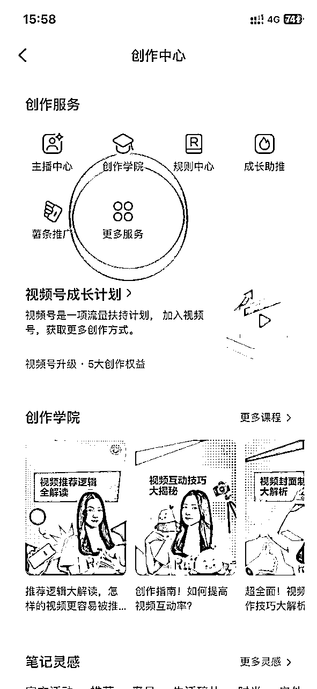

来源：https://k4h4dcpi91.feishu.cn/docx/YMSAdBcG9o4quxxdsIcczXInnpf
大家好，我是小李同学。
之前分享了 《小红书单店7天GMV4.27万经验分享》https://t.zsxq.com/0eUwTFh6m
距离上次分享，已经过去了两个多月。
任何处于红利期的项目，变化都是极快的。
今天，我作为深耕小红书三个月并取得单月 10W＋净收益的早期入局者，分享一点自己对于小红书电商这个风口平台的个人看法。
小红书电商，可能是互联网最后一块最适合普通人的电商流量蓝海。
知道的朋友们，也都在前仆后继的奔向这个赛道。这时候当看到无数出现在面前的成绩单，例如下图。
20万的营业额，利润百分之三十 左右。还有很多更冲击眼球让你眼花缭乱的真实数据。
面对这样的晒单图，面对这样的分享帖，你看到之后是不是有莫名的兴奋感，渴望也达到这样的状态？
如果是我，会直接产生链接大佬请教甚至付费直接的想法。
内心甚至会想：“我想像***一样实现店铺日入过万！”
至于怎样才能实现日入过万？需要做什么？做了后真的那么容易实现吗？事实上大家可能都未深入考虑。
早年的淘客，19 年的抖音，22年的视频号带货，每一次这种大风口，都造就了一波及时赶上并愿意努力的人。
先说结论：
红利期仍然是红利期，只是对于普通人来说，跟爆品不会再像早期那样。
在过去，掌握爆款流量密码选品的逻辑没有大问题，执行力到位后，混剪就可获取较大流量和转化。
（这边解释一下什么是流量密码：抄&模仿对标爆款的封面、标题、内容的结构形式）
但，这只是早期的情况。
之前之所以能通过上述说的流量密码就可以出大成绩，本质上是因为早期平台商品笔记的内容丰富度不足，平台的电商属性需要去通过我们这样的商家和创作者去刺激拓展。
但是，现在应该有很多在做的小伙伴都发现了，用同样的流量密码去做小红书无货源带货这个项目，虽然有流量，但已经比较难难爆单了。
为什么呢？
举例来说，我打过的一款内衣类产品
入局时商品笔记仅 80 万＋商品笔记，如今仅一个月不到已经有了 220 万＋。
除此之外，小红书作为优质的内容平台，更重视平台内容，当平台电商属性趋于完善后会立刻增强内容监管
混剪只会越来越大不如前。
「小红书或许仍然处于红利爆发期，但平台的流量均分到新老玩家（尤其现状新玩家在每日极速递增）身上，本来的爆发在分配后力量越发薄弱，这个时候除了早入局优势外，也只能以内容和坚持及后续的紧跟平台政策取胜」
无论抖音还是小红书，内容平台获取流量的最佳方案最好是原创
我经历了从混剪到实拍的阶段，混剪在早期，一小时批量剪辑20条，条条百赞且有不错的转化不成问题
到后面的违规提示，批量限流账号
当官方提示时仍然抱有侥幸心理，增加去重混剪力度
直到30多个账号仅剩8个后，悔之晚矣！
那目前小红书混剪还可以去做吗？可以，但圈友们在模式跑通后建议尽早去做以下动作
提升内容原创度，尽量建立自己的壁垒，还有提高产品竞争力（低价或者货源优势）。
提升原创度
提高产品优势
同样的产品，当店铺爆的那一刻你的账号已经出现在无数积极寻找对标的后来者面前，如果是混剪，技术上的东西极其容易被模仿和超越，那什么东西是短期内无法超越或者不愿去模仿的呢！
产品定价。低价永远是流量密码，不仅容易起号，而且不会因为有可观的利润被太多人盯上。当下很卷的正是那些之前利润空间有百分之三十至五十的产品。在我的产品成本22元售价49.9元时，模仿者1比1模仿内容形式获取流量，一样的货源对方只卖39.9元，后续快速出现更多的人更甚只卖36.9元，29.9元。。。。。。所以低价牺牲小部分利润空间换取生存空间可能是最好的自我保护。
对于普通人，以上两点虽然有所难度但只有尽早接受，才能在快速内卷的平台持续发展。
在我找到精准对标并经过多次测试得到稳定流量密码的情况下
基于同样的爆款内容模版同样的账号，同样的运营动作，产生同样的结果差距很大。
这一点或许是玄学，但这个平台个人的多个账号确实是这样。
也曾分享过矩阵玩法，既按同样的内容模版制作素材分发到多个账号
但只有小部分账号数据不错，余下账号数据平平。
这就给账号数量有限或者没时间增加运营多个账号增加了跑通难度。
简单来说，在平台早期电商算法不够成熟的情况下，会存在爆率的影响因素。
如果加入爆率的思考角度，我们在两个场景上就需要注意：
单个账号什么时候爆，爆的时间我们是不可控的，高手也无法保证，但提升账号数量一定程度上可以增加爆的几率。
我的矩阵运营方案是，个人店跑通之后，注册企业店（个体营业执照花费600元申请认证企业号，认证通过后注册企业店铺）好处在于一家企业店可以绑定三个主理人账号，也就是一家店铺四个账号通过更新笔记给店铺带来流量。好处在于押金1000元只用缴纳1次，而且一个营业执照可以注册三家企业店铺，相较于个人店，个体店这可能是最低成本最高效的矩阵方案。
流程：
小红书左上角——“三”
创作中心
创作服务——更多服务
作者能力——专业号中心
按步骤认证专业号——人脸验证后搜索栏搜索主理人——选择身份为“主理人身份”



当随着平台逐步完善，难度增加，信息差的存在，个人优化能力差等等，免不了会产生很多“专业的老师”
他们有着亮眼的数据，但你我并不清楚对方跑了多少账号，成功率如何，玩法是否稳定
信息付费，知识付费本质上算是是购入长期价值；
这里面有一个悖论，只有付费后学习实践中才知道付费给了价值还是付费给了割韭菜的镰刀。
所以如果付费学习，还是希望大家付费前系统了解对方的交付水平，产出了怎样的结果，成功率如何
是否在该赛道有着极强的专业性和跟随平台迭代的能力
这有点像视频号早期红利期，平台的玩法迭代的速度极快，可能今天还在淘金，明天只能淘沙
向有结果的人学习没错，但需擦亮眼睛保持冷静，为实际“长期价值”买单，别因为冲动而买单。
前期选品及找对标占用小部分时间，这个想必对大家影响不大
当店铺稳定运营后除去咨询外，发货，退货退款订单处理，笔记制作文案制作都会占据
尤其客服环节会不定时占据白天的时间，这里需要大家做好预估并做好时间分配；
小红书上大多数朋友做的都是无货源模式，这个模式是需要现金流的，尤其店铺起量之后可能需要强大的现金流，这一点需要重视。
举例：（图一）单月GMV20万，其中仅产品成本比率为百分之六十五，即13万是我需要预付给厂家。
而款项则是在平台账号，半个月提现。
再说清楚些，账号只要在稳定运营，每天仅这家店就至少需要准备5000~10000的流动资金。
我们的店铺卖多少钱重要吗？赚多少钱才重要，大家前期可以根据个人情况做好现金流预估。
小红书虽然是优质的平台，但仅指这个平台转化率优于抖音快手等平台。但是产品退货率和其它平台相差无几。
所以尽管是去做无货源电商，大家最好还是把控下产品质量和内容
红利期的第一阶段是无脑跟品混剪，接下来无脑混剪明显不如前的情况下如何更好地去做呢？
最后，祝大家都能取得不错成绩！